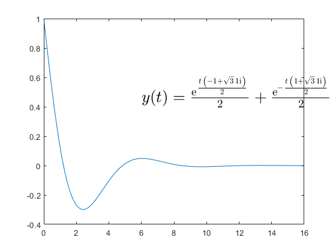
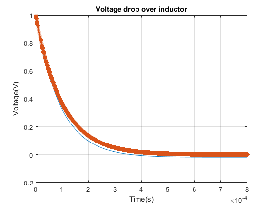

Contents
Lab2, ST, 6/3/2025
%different circuit, voltage drop on inductor, compute vl R=1;C=1;L=1;u=1; %unreal values for parameters s = dsolve('u = x1 + R*x2 + L*Dx2','Dx1 = 1/C*x2', 'x1(0) = 0', 'x2(0) = 0');
Warning: Support for character vector or string inputs will be removed in a
future release. Instead, use syms to declare variables and replace inputs such
as dsolve('Dy = -3*y') with syms y(t); dsolve(diff(y,t) == -3*y).
Evaluate help for the function subs
syms R L C snew = subs(s, [R L C], [1 1 1])
snew =
struct with fields:
x1: - exp((t*(- 1 + 3^(1/2)*1i))/2)*(u/2 - (3^(1/2)*u*1i)/6 + (3^(1/2)*…
x2: - (exp((t*(- 1 + 3^(1/2)*1i))/2)*(- 1 + 3^(1/2)*1i)*(u/2 - (3^(1/2)…
Plot the voltage drop on the inductor
syms u y = u-s.x2*R-s.x1; ynew = subs(y, [R L C u], [1 1 1 1]); % ynew is far too long ynews = simplify(ynew);
Recognise and write on notebook the analitical expression of y
yl = latex(ynews); T = 2; %time constant t = linspace(0, 8*T, 1e3); y = exp((t*(- 1 + 3^(1/2)*1i))/2)/2 + exp(-(t*(1 + 3^(1/2)*1i))/2)/2 + (3^(1/2)*exp((t*(- 1 + 3^(1/2)*1i))/2)*1i)/6 - (3^(1/2)*exp(-(t*(1 + 3^(1/2)*1i))/2)*1i)/6; plot(t, y) text(6, 0.5, ['$y(t) = ', yl, '$'],'Interpreter','latex', 'FontSize', 20) shg;

Plot y for R = 2.2kOhm, L = 0.2H, C = 2uF
R1 = 2.2e3; L1 = 0.2; C1 = 2e-6;
clear all; clc; s = dsolve('u = x1 + R*x2 + L*Dx2','Dx1 = 1/C*x2', 'x1(0) = 0', 'x2(0) = 0'); syms R L C u y = u-s.x2*R-s.x1; ynew = subs(y, [R L C u], [2.2e3 0.2 2e-6 1]); ynews = simplify(ynew) T = 1e-4; %time constant t = linspace(0, 8*T, 1e3); y = exp((4*t*(1547114198148061834117170406284786513^(1/2) - 1298650782789152375))/944473296573929)/2 + exp(-(4*t*(1547114198148061834117170406284786513^(1/2) + 1298650782789152375))/944473296573929)/2 - (1375*1547114198148061834117170406284786513^(1/2)*exp((4*t*(1547114198148061834117170406284786513^(1/2) - 1298650782789152375))/944473296573929))/3276141747490816205394 + (1375*1547114198148061834117170406284786513^(1/2)*exp(-(4*t*(1547114198148061834117170406284786513^(1/2) + 1298650782789152375))/944473296573929))/3276141747490816205394; plot(t, y) shg; grid; title('Voltage drop over inductor') ylabel('Voltage(V)') xlabel('Time(s)') % Recognise the exponential and plot it over the previous plot % yrec = exp(-t/4/T); yrec = exp(-t/T); hold plot(t, yrec, '*')
Warning: Support for character vector or string inputs will be removed in a
future release. Instead, use syms to declare variables and replace inputs such
as dsolve('Dy = -3*y') with syms y(t); dsolve(diff(y,t) == -3*y).
ynews =
exp((4*t*(1547114198148061834117170406284786513^(1/2) - 1298650782789152375))/944473296573929)/2 + exp(-(4*t*(1547114198148061834117170406284786513^(1/2) + 1298650782789152375))/944473296573929)/2 - (1375*1547114198148061834117170406284786513^(1/2)*exp((4*t*(1547114198148061834117170406284786513^(1/2) - 1298650782789152375))/944473296573929))/3276141747490816205394 + (1375*1547114198148061834117170406284786513^(1/2)*exp(-(4*t*(1547114198148061834117170406284786513^(1/2) + 1298650782789152375))/944473296573929))/3276141747490816205394
Current plot held
